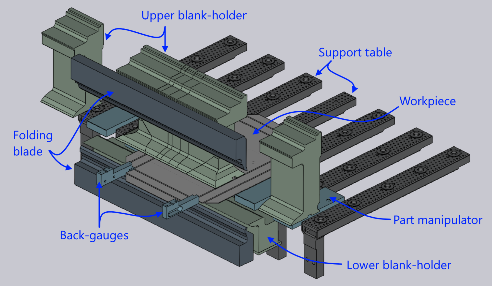
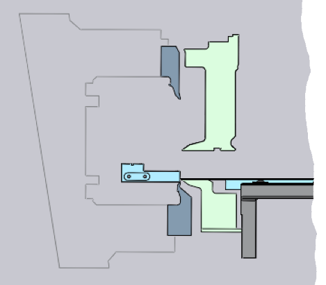
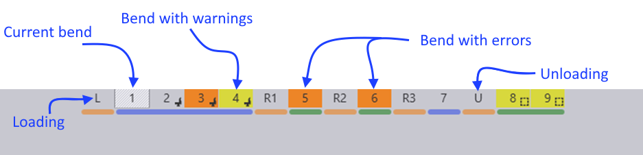
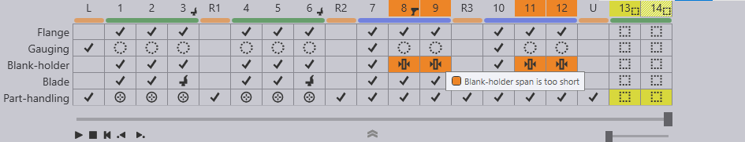

Zobrazení skládání
Po přepnutí do režimu Skládání CAM se v pracovním prostoru zobrazí pohled na skládání. Zobrazuje 3D obraz stroje s výkyvným ohýbáním s obrobkem. Takto by to vypadalo u stroje TBC-5030.

Stroj s výkyvným ohýbáním je velký stroj se stolem, který je obvykle delší než 3 metry. Zobrazení celého stroje by zakrylo obrobek a ztížilo vizualizaci procesu ohýbání. Zobrazení ohybu tak zobrazuje zkrácený pohled na stroj. Různé prvky, jako jsou skládací nože a spodní držáky surového materiálu, jsou zobrazeny pouze v délkách potřebných k pokrytí oblasti zájmu. Zobrazují se pouze části přidržovačů, které se skutečně používají ke zpracování. Zobrazeny jsou pouze některé nosníky podpůrného stolu a některé manipulátory s díly. Tento zkrácený pohled usnadňuje sledování skutečného zpracování.

C-rám, na kterém jsou namontovány nože, se obvykle nezobrazuje v 3D pohledu, protože by zakrýval většinu pohledu na skládací operace. Pokud však otočíte 3D zobrazení tak, aby bylo zarovnáno s orientací na konec, C-rám se zobrazí jako obrys (viz obrázek vedle). Díky tomu je snadné vidět, jak geometrie dílu zapadá do C-rámu. Při otočení 3D zobrazení do jiné orientace se C-rám skryje.
Navigátor skládání
V zobrazení skládání se panel Navigátor skládání zobrazí podél horního okraje okna TecZone Fold. Tento navigátor poskytuje rychlý způsob navigace mezi různými procesy ohýbání a také okamžitý přehled různých kontrol stavů pro každé ohýbání. Poskytuje také ovládací prvky pro zobrazení nebo zastavení simulace skládání. Zde je příklad toho, jak vypadá navigátor skládání:

Navigátor zobrazuje různé barvy pro ohyby, které obsahují varování nebo chyby. Aktuální ohyb je zobrazen obrysem rámečku a silné tmavé čáry mezi některými ohyby představují boční hranice (kde musí operátor díl otočit, aby mohl pokračovat ve zpracování).
Ovládací prvky simulace
Když přiblížíte myš k navigátoru skládání, zobrazí se ovládací prvky simulace.
-
Posuvný regulátor lze použít k přesunu aktuálního ohybu v různých fázích skládací operace (přesun dílu do ohýbací polohy, upnutí pomocí přidržovače, přesun skládacího nože atd.). Při posouvání posuvného regulátoru se v popisku zobrazuje aktuální fáze skládání a v simulaci se pohybují různé části stroje. Pokud dojde ke kolizi, jsou tyto části zbarveny červeně, aby byla kolize jasně zvýrazněna.
-
Ovládací prvky vlevo slouží ke spuštění simulace, jejímu zastavení nebo přetočení na začátek. (Tip: Můžete také stisknout Space pro spuštění nebo zastavení simulace skládání).
-
Tlačítko přehrát jeden lze použít k přehrání pouze jednoho ohybu; opakovaným stisknutím tohoto tlačítka si můžete prohlédnout simulaci všech ohybů. (Tip: můžete stisknout Ctrl+Space pro přehrání pouze jednoho ohybu).
-
Šipka ukazující dolů slouží k rozbalení navigátoru skládání, kde se zobrazí podrobnější informace o chybách a varováních pro různé ohyby. (Tip: Můžete také stisknout Z pro rozbalení/sbalení zobrazení navigátoru skládání).
Navigátor skládání: rozšířené zobrazení
Když otevřete navigátor skládání kliknutím na tlačítko Otevřít nebo stisknutím klávesy Z, vypadá to takto:

Pro každý ohyb navigátor nyní zobrazuje sadu ikon stavu. Každá barevná ikona představuje chybu nebo varování. Při najetí myší na barevnou buňku se zobrazí další informace o tom, o jakou chybu nebo varování se jedná (jak můžete vidět na obrázku výše).
Kliknutím na buňku, která zobrazuje polohy chyby, se simulace posune tak, že chyba je okamžitě zřejmá. Například kliknutím na buňku, která zobrazuje chybu nárazu nože, se simulace přesune do fáze simulace, kdy nůž naráží do obrobku.
Ikony stavu
V různých řádcích navigátoru skládání se zobrazuje několik různých ikon stavu. Níže uvedené sekce vysvětlují význam těchto ikon. Všimněte si, že další informace o významu ikony můžete vždy získat pouhým přesunutím myši nad ikonu.
Řádek Příruba
Řádek Příruba v navigátoru skládání zobrazuje informace o kolizích uvnitř dílu (kolize jedné příruby modelu s jinou). TecZone Fold zkusí tomuto zabránit, pokud to bude možné, změnou pořadí. Toto jsou ikony, které můžete vidět v řádku Příruba:
Ikona |
Význam |
Žádná chyba, stav OK |
|
Při ohýbání dochází ke kolizi příruby s přírubou |
|
Tento ohyb byl přeskočen (žádné zpracování pro tento ohyb) |
Řádek Dorážení
Řádek Dorážení v navigátoru skládání zobrazuje stav dorážení. Vzhledem k tomu, že dorážení se používá pouze pro první ohyb na straně, všechny ostatní ohyby na straně budou zobrazovat ikonu dutého kruhu (což znamená, že tento ohyb nevyžaduje dorážení).
Ikona |
Význam |
Žádná chyba, dorážení správně vypočítáno |
|
Chyba: Dorazový palec při dorážení koliduje s dílem |
|
Chyba: Pro tuto stranu nebylo možné vypočítat dorážení |
|
Informace: Toto není první ohyb na této straně; nevyžaduje dorážení |
Řádek Přidržovač
Tento řádek navigátoru skládání zobrazuje informace o stavu přidržovače. Toto jsou možné ikony chyb nebo varování, které se mohou zobrazit v tomto sloupci. Některé ikony se používají jak pro chyby, tak pro varování, přičemž rozdíl mezi nimi je dán barvou pozadí buňky (žlutá pro varování, oranžovo-červená pro chyby).
Ikona |
Význam |
Žádná chyba – přidržovač je správně vypočítán a nemá žádné kolize |
|
Chyba: Díl koliduje s přidržovačem |
|
Chyba: Rozpětí přidržovače je příliš krátké (
přesah linie ohybu za přidržovačem je větší než 10 mm). |
|
Informace: Tento ohyb používá nástroj ENW (přesunutím myši nad buňku se zobrazí další podrobnosti) |
Řádek Nůž
Tento řádek poskytuje informace o skládacím noži použitém pro tento ohyb. Níže uvedený seznam obsahuje možné ikony, které se mohou v tomto sloupci zobrazit:
Ikona |
Význam |
Žádná chyba – skládací nůž je správně vypočítán a nedochází k žádné kolizi |
|
Chyba: Díl koliduje se skládacím nožem |
|
Chyba: Rozpětí délky nože je příliš krátké (
přesah linie ohybu za nožem je větší než 10 mm).
K tomu dochází pouze při použití nože ZBW. |
|
*Varován*í: K zabránění kolizi nože se používá nestandardní vzduchová mezera |
|
Chyba: Překročení omezení os nosiče ZBW |
|
Chyba: Přetížení – požadovaná lisovací síla je příliš vysoká (možná bude nutné zvětšit vzduchovou mezeru) |
Řádek Manipulace s díly
Tento řádek zobrazuje informace o stavu manipulace s díly pomocí upínačů s přísavkami nebo magnetických upínačů. Toto jsou ikony, které by se mohly zobrazit zde:
Ikona |
Význam |
Při manipulaci s díly nebyly zaznamenány žádné problémy |
|
Chyba: Díl koliduje s podpůrným stolem (například je zde dolní příruba, která by vyčnívala dolů do podpůrného stolu) |
|
Informace: Díl je uchopen přední stranou upínače |
|
Informace: Díl je uchopen spodní stranou upínače |
|
Varování: Upínač může mít pouze minimální překrytí s dílem |
|
Chyba: Nelze vypočítat upnutí – na povrchu dílu nebylo žádné místo vhodné pro umístění upínače |
|
Varování: Díl musí být na začátku této strany otočen obsluhou |
|
Díl je třeba na konci této strany vyjmout ručně (automatické vyjmutí pomocí upínače není možné, protože se díl dotýká přidržovače) |
Při provádění změn v konfiguraci přidržovače, nožů, upínače nebo dorazového palce se navigátor skládání okamžitě aktualizuje podle nového stavu. Díky této okamžité zpětné vazbě je velmi snadné experimentovat s různými konfiguracemi, aniž byste museli pokaždé vydávat příkaz k přepočítávání.